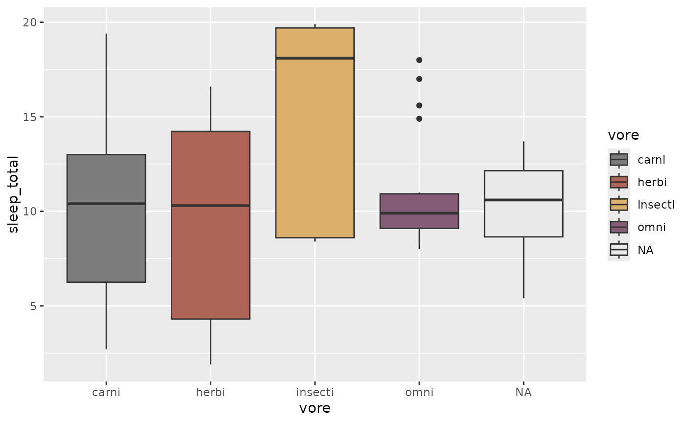

CARTO color scales
Usage
scale_color_carto_c(
...,
type = "quantitative",
palette = 1,
direction = 1,
na.value = "#e9e9e9",
guide = "colourbar"
)
scale_color_carto_d(
...,
type = "qualitative",
palette = 1,
direction = 1,
na.value = "#e9e9e9"
)
scale_colour_carto_c(
...,
type = "quantitative",
palette = 1,
direction = 1,
na.value = "#e9e9e9",
guide = "colourbar"
)
scale_colour_carto_d(
...,
type = "qualitative",
palette = 1,
direction = 1,
na.value = "#e9e9e9"
)
scale_fill_carto_c(
...,
type = "quantitative",
palette = 1,
direction = 1,
na.value = "#e9e9e9",
guide = "colourbar"
)
scale_fill_carto_d(
...,
type = "qualitative",
palette = 1,
direction = 1,
na.value = "#e9e9e9"
)Arguments
- ...
Other arguments passed on to
ggplot2::discrete_scale()orggplot2::continuous_scale()to control name, limits, breaks, labels and so forth- type
One of \"aggregation\", \"diverging\", \"qualitative\", or \"quantitative\"
- palette
If a string, will use that named palette. If a number, will index into the list of palettes of appropriate
type- direction
Sets the order of colors in the scale. If 1, the default, colors are as output by
carto_pal(). If -1, the order of colors is reversed- na.value
Missing values will be replaced with this value.
- guide
A function used to create a guide or its name. See
guides()for more information.
Details
Discrete scales raise an error if a qualitative palette has fewer
colors than the scale has categories. See Max_n in metacartocolors.
Examples
library(ggplot2)
ggplot(msleep, aes(vore, sleep_total, fill = vore)) +
geom_boxplot() +
scale_fill_carto_d(palette = 6, direction = -1)

if (FALSE) { # \dontrun{
library(sf)
library(spData)
library(ggplot2)
ggplot(world, aes(fill = lifeExp)) +
geom_sf(data = world) +
coord_sf(crs = "+proj=robin") +
scale_fill_carto_c(name = "Life expectancy: ",
type = "diverging", palette = "Earth", direction = -1) +
theme_void()
ggplot(world, aes(fill = region_un)) +
geom_sf(data = world) +
coord_sf(crs = "+proj=robin") +
scale_fill_carto_d(name = "Region: ", palette = "Safe") +
theme_void()
} # }